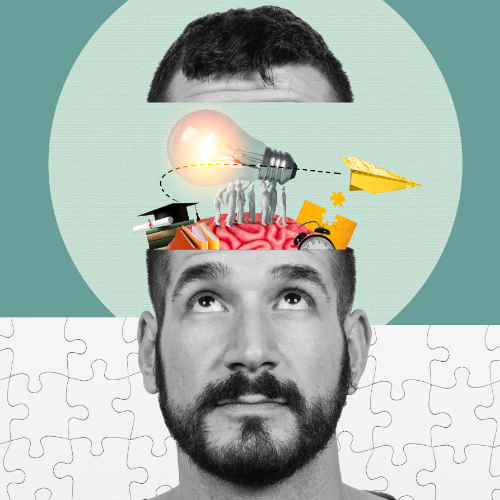
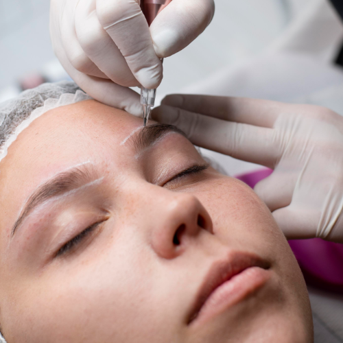
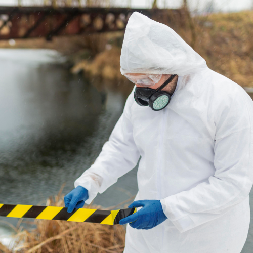
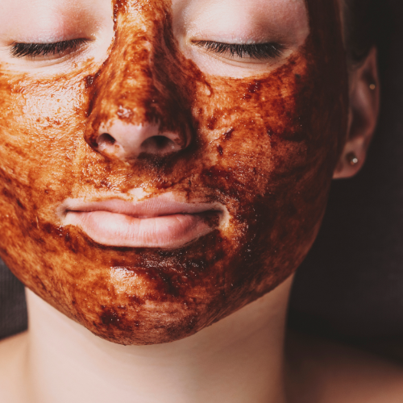
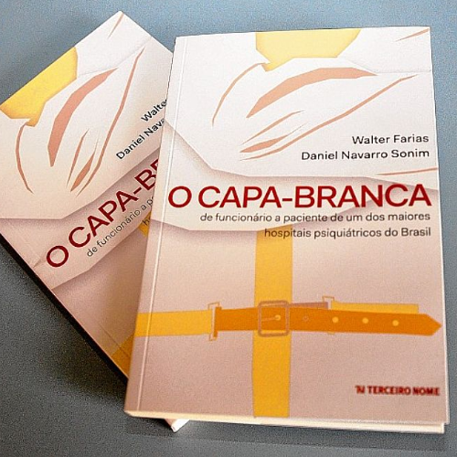
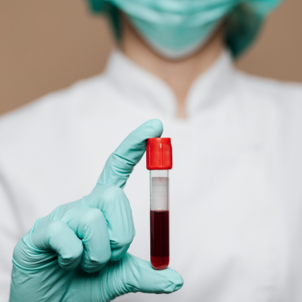
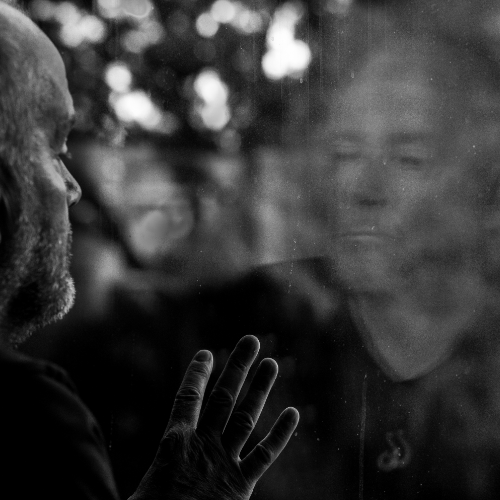
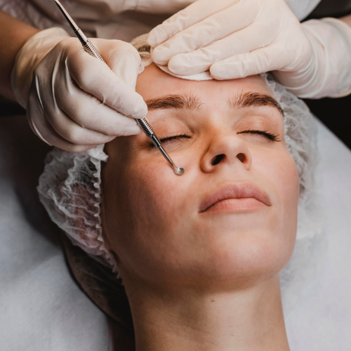

1° dia (25/03)
PREP Profilaxia Pré-Exposição ao HIV
e PEP Profilaxia Pós-Exposição ao HIV
com Damaris Fernandes e Profª Aline B. Zanatta
500 vagas
Cursos Convidados
19h00 às 20h15
Auditório Jamil Salomão
PALESTRANTES: Enfermeira Damaris Fernandes de Sousa (DST – Americana) e Profª
Aline Bedin Zanatta (de Florianópolis POR videoconferência).
Liderança do futuro:
desafios e habilidades profissionais
com Maine Marinho Lucato
500 vagas
Cursos Convidados
20h15 às 22h00
Auditório Jamil Salomão
Enfermeira (Graduação em Enfermagem pela FAM, especialista em Qualidade e
Segurança do Paciente, Inovação e Tecnologia e MBA em Gestão de Serviços de Saúde. Mestranda pela
Engenharia de Produção e Manufatura na FCA – UNICAMP, e Fellowship do Programa de Liderança – CBEXS
Futuro, do Colégio Brasileiro de Executivos da Saúde).
Procedimentos injetáveis
com Profª. Laura Grignoli
90 vagas
Cursos Convidados
19h00 às 20h30
Sala VIP I
Curriculo não informado
Luto e saúde:
Intervenções e perspectivas diante das perdas e da morte
com Felipe Donadon
65 vagas
Cursos Convidados
19h00 às 20h30
Sala VIP II
Psicólogo, formado pela PUC-Campinas (2016) e mestre em Ciências da Religião pela
UMESP (2021) com a dissertação intitulada: "As Reminiscências da Morte: Espiritualidade e morte no
budismo tibetano em diálogo com a psicologia ocidental". Atualmente encontra-se no doutorado, também
pela UMESP em Ciências da Religião, pesquisando sobre luto em interface com a espiritualidade
budista. Possui artigos publicados relacionados à área de luto e morte, particularmente os
seguintes: "Beneficiar aos mortos, cultivar a compaixão e lidar com o luto" e "Desejo mimético,
redes sociais e suicídio: possíveis contribuições das concepções cristã e budista". Interessa-se
pelos modos que a espiritualidade e religiosidade podem contribuir com áreas como a Psicologia no
trato com a morte.
Efeitos do Racismo na Saúde Mental:
qual o papel da psicologia neste contexto
com Liselene Cristina da Cunha
80 vagas
Cursos Convidados
19h00 às 20h30
Bloco 1, Sala 05
Psicóloga, Integrante da Comissão de relações étnico raciais: Coletivo
Perifanalise.
Conexão Criativa:
diálogos e vivências
com Débora Delazari Ferreira e Karina Nuevo
40 vagas
Cursos Convidados
19h00 às 20h30
Bloco 1, Sala 06
Débora Delazari Ferreira (psicóloga, facilitadora de grupos de grupos sob
referencial da Abordagem Centrada na Pessoa) e Karina de Cássia Nuevo (Psicóloga, facilitadora de
grupos de grupos sob referencial da Abordagem Centrada na Pessoa).

Pesquisa Clínica
com Profª Monize Silva
40 vagas
Cursos Convidados
19h00 às 22h00
Bloco 1, Sala 08
Curriculo não informado
Workshop Aplicação de injetáveis
na área farmacêutica - teoria + práticas dias 25 e 26
com Profª. Marcia Holanda
30 vagas
Cursos Convidados
19h00 às 22h00
Bloco 3, Sala 124
Curriculo não informado
SUS
com Dra. Gisela Onuchic
65 vagas
Cursos Convidados
19h00 às 22h00
Bloco 4, Sala 127
Curriculo não informado
Micropigmentação
com Profª Camilla Morais
75 vagas
Cursos Convidados
19h00 às 22h00
Bloco 3, Sala 124
Curriculo não informado

Workshop Empower
Eletroestimulador Magnético
com Dra. Ana Carolina
75 vagas
Cursos Convidados
19h00 às 20h30
Sala a confirmar
Empresa: American Fisio – HTM
2° dia (26/03)
Perícia Criminal
com Marcos Alberti
500 vagas
Cursos Convidados
19h00 às 22h00
Auditório Jamil Salomão
Curriculo não informado

Ansiedade na vida universitária:
como identificar e lidar com os sintomas
com Priscila Castanhassi
95 vagas
Cursos Convidados
19h00 às 20h30
Sala VIP I
Psicóloga clínica e organizacional. Mestranda pela PUC-Campinas. Integra o Grupo
de Pesquisas: Psicologia, Trabalho e Carreira, da mesma instituição. Possui vasta experiência na
área de Pessoa e Cultura. É especialista em Terapia Cognitivo-Comportamental com ênfase em Terapia
Racional Emotivo-Comportamental pelo Instituto de Psicologia e Controle do Stress (IPCS) e
Especialista em Gestão de Pessoas e Desenvolvimento do Capital Humano, pela Universidade Metodista
de Piracicaba. Psicóloga pela Universidade São Francisco 2015 e Administradora de Empresas pela
Pontifícia Universidade Católica de Campinas - 2008
Transtorno do Espectro Autista:
do entendimento da neurodiversidade ao tratamento
interdisciplinar
com Prof. Carlos Erik Ananias
65 vagas
Cursos Convidados
19h00 às 20h30
Sala VIP II
Psicólogo. Especialista em Neuropsicologia. Pós-graduação em Análise do
Comportamento Aplicada. Mestrando em Saúde, Interdisciplinaridade e Reabilitação na Unicamp.
Aprimoramento em TEA N3. Formação em Psicopatologia Infantil e Transtornos do Neurodesenvolvimento;
Formação em Desenvolvimento Infantil. Certificado Internacionalmente em Manejo de crises agressivas
Atuação profissional na alta complexidade
Serviço de Acolhimento em Família Acolhedora
com Érika Aparecida Martins
80 vagas
Cursos Convidados
19h00 às 20h30
Bloco 1, Sala 05
Graduação em Serviço Social - UNISAL. Experiência Profissional: 16 anos de
atuação
na Rede como Assistente Social, onde executa há 4 anos a função de Técnica do Serviço de Acolhimento
em Família Acolhedora Americana, Isabela Albuquerque Cruz (Graduação em Psicologia - UNISAL com
especialização em Neurodesenvolvimento. Experiência Profissional: 04 anos de atuação na Rede como
Psicóloga - Serviço de Acolhimento em Família Acolhedora Americana) e Rosa Gimenes (Formação em
Psicologia UNIMEP- com especialização em Clínica Psicanalítica. Experiência profissional: 09 anos de
atuação na Rede como Assistente Social. Atualmente executa gestão técnica Serviço de Acolhimento em
Família Acolhedora Americana).
A clínica fenomenológica
com Profª Janaina Artiolli
40 vagas
Cursos Convidados
19h00 às 20h30
Bloco 1, Sala 08
Curriculo não informado
Workshop Peeling de Corais
com Profª. Jeany Vital (Cosmobeauty)
75 vagas
Cursos Convidados
19h00 às 20h30
Bloco 3, Sala 124
Curriculo não informado

Workshop Técnicas corporais:
hands on – mãos na massa
com Profª. Claudia/Fabíola/Ana
40 vagas
Cursos Convidados
20h40 às 22h00
Clínica de Estética
Empresa Extratos da Terra
3° dia (27/03)
Palestra sobre o livro:
O Capa branca - de funcionário a paciente de saúde mental de um dos
maiores hospitais psiquiátricos do Brasil
com Daniel Navarro Sonim e Walter Farias
500 vagas
Cursos Convidados
19h00 às 22h00
Auditório Jamil Salomão
Curriculo não informado

Gasometria
com Ricardo Mascarenhas Furlan
95 vagas
Cursos Convidados
19h00 às 22h00
Sala VIP I
Fisioterapeuta. Especialista em Fisioterapia hospitalar e UTI adulto pelo
Hospital Israelita Albert Einstein; Especialista em Unidade de Terapia Intensiva pelo COFFITO; RT de
Fisioterapia do hospital Santa Barbara; Fisioterapeuta intensivista da UTI Cardiologica, UTI
coronariana e UTI geral do Hospital fornecedores de Cana

Oficina do luto
Um olhar através do Baralho Conversando Sobre o Luto e
Ressignificando Perdas
com Fernanda Monteiro Granja
65 vagas
Cursos Convidados
19h00 às 22h00
Sala VIP II
Psicóloga clínica graduada em 2019, pela Faculdade UNISAL de Campinas-SP Com
experiência em atendimentos emergenciais (Plantão Psicológico) Assistente de Psicologia | Comercial
na Vetor Editora, atendo os segmentos de Avaliação do Trânsito e Porte de Armas e sou responsável
pelo Projeto Vetor Visitas e mãe do pet Pingo, que é cão terapeuta.

Atividades Assistidas com cavalos:
da Definição a Vivência prática do Projeto Equoterapia da ESALQ
USP
com Profª Roberta Ariboni Brandi
80 vagas
Cursos Convidados
19h00 às 20h30
Bloco 1, Sala 05
Departamento de Zootecnia fzea USP, área equinocultura. Coordenadora técnica do
setor de equinocultura e do projeto Equoterapia) e Prof. Sila Carneiro da Silva (Departamento de
Zootecnia, ESALQ Usp, área de forragicultura e pastagens. Coordenador administrativo do setor de
equinocultura e do Projeto Equoterapia da ESALQ.
Psicologia, cuidado a população
LGBTQIAPN+ e o Processo de Afirmação de gênero
com Rodrigo Presotto
80 vagas
Cursos Convidados
19h00 às 20h30
Bloco 1, Sala 09
Psicólogo Centro de Referência LGBTQIAPN+ Campinas
Workshop Ultrassom
micro e macro focado
com Kelly Martino
75 vagas
Cursos Convidados
19h00 às 20h30
Bloco 3, Sala 124
Empresa Bioage
Workshop Dermaplaining
com Profª Carolina Casa Grande
75 vagas
Cursos Convidados
20h30 às 22h00
Bloco 3, Sala 124
Empresa Bell Coll
